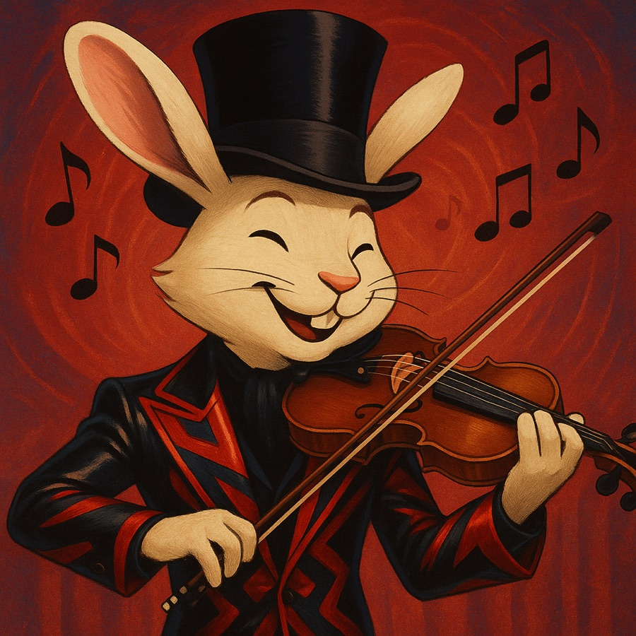
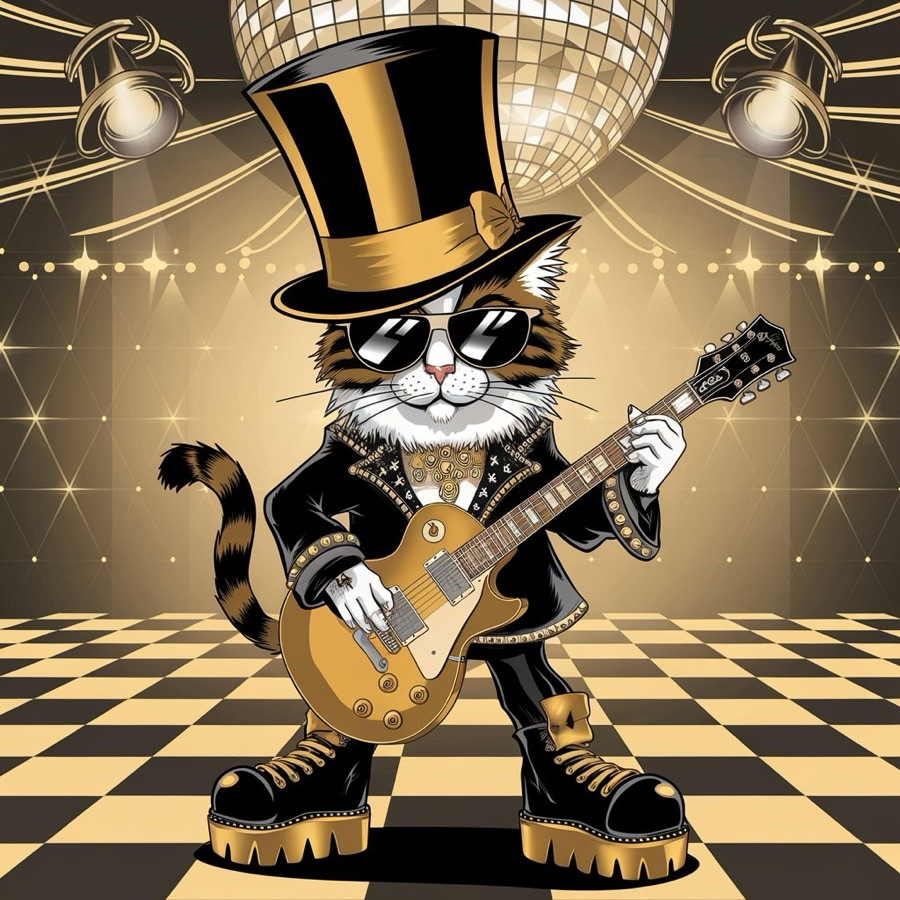
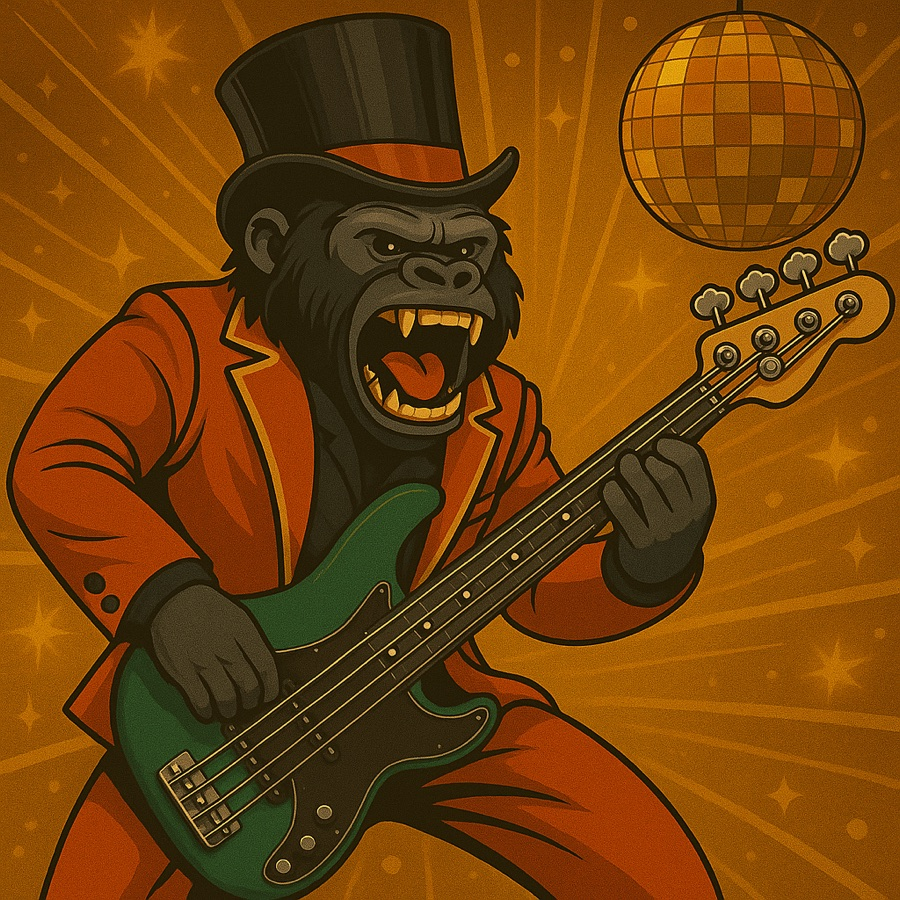
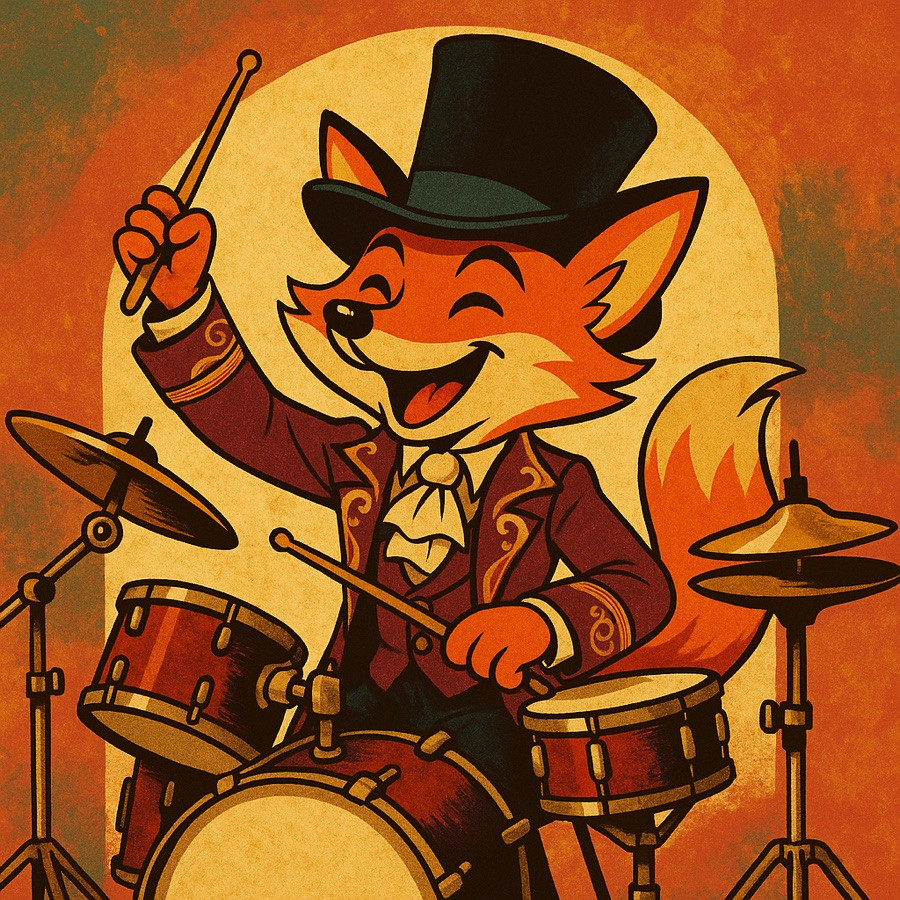
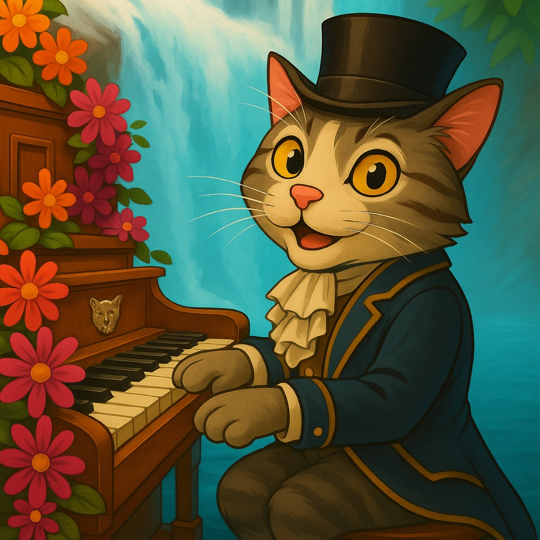
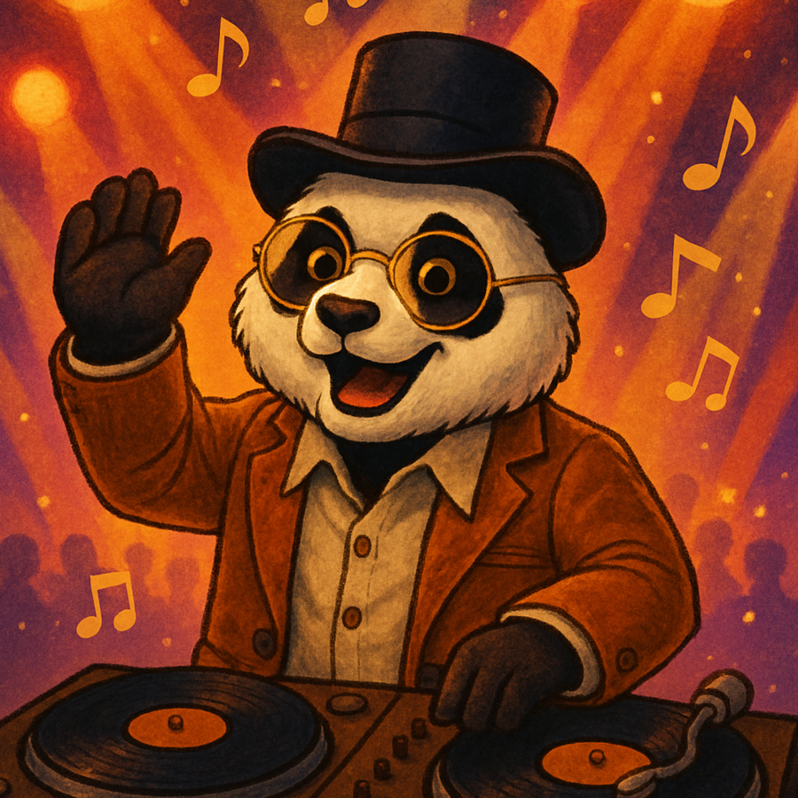

Members
音楽の力を信じる動物たち
シルクハットに導かれて集まった、音楽の力を信じる動物たち。
レオン
Vocalist
変幻自在の声を持つ不思議なシンガー。男性の声も女性の声も自在に操り、音楽の魔法を紡ぐ。音の森で、シルクハットを被った瞬間、空の彼方から「仲間の音」が聞こえ始めた。しかし、レオンのことはまだ誰も知らない。

ストラビット
Leader & Violinist
月明かりを浴びながら、優雅に弓を奏でる森の名手。跳躍するような軽やかな演奏スタイルで、メロディに躍動感を与える。リーダーとして、バンドの音楽性を統率し、メンバーの心を繋げる重要な役割を果たす。

エネトラ
Guitarist
孤高のメロディメーカー。強さと美しさを操る二面性の持ち主。昼は優雅に奏で、夜は激しく響かせる。その音色は雷鳴のように大地を震わせる。

ゴリーセ
Bassist
巨体から生まれる圧倒的な低音。性格は穏やかで、バンドの母のような存在。音を支える覚悟と優しさを、指先で表現する。

アイニー
Drummer
俊敏かつ計算されたグルーヴを生み出す天才ドラマー。いつもクールだが、心の奥には熱いビートが燃えている。

ショパニャン
Keyboardist
森のピアニスト。繊細な指さばきで風や月のような音を奏でる。誰よりも音に敏感で、メロディに命を吹き込む。

シンシン
DJ
リズムで心を掴むDJマスター。夜の空を飛びながら、音を収集してきた知識派。
Other Members
| 名前 | 楽器 | 動物 | キャッチコピー |
|---|---|---|---|
| モンキルト | ギター | サル | 魅惑のメロディで心をつかむギタリスト |
| トンパオ | パーカッション | ゾウ | ダイナミックなリズムを放つパーカッショニスト |
| コンガルー | コンガ | カンガルー | リズムで心を打つパーカッショニスト |
| チェララ | チェロ | コアラ | 心に響くメロディを奏でる情熱家 |
| ルージュ | ハープ | レッサーパンダ | ハープを操る優雅な音色の魔術師 |
| ベートーワン | サックス | 犬 | サックスを操る音色の魔法使い |